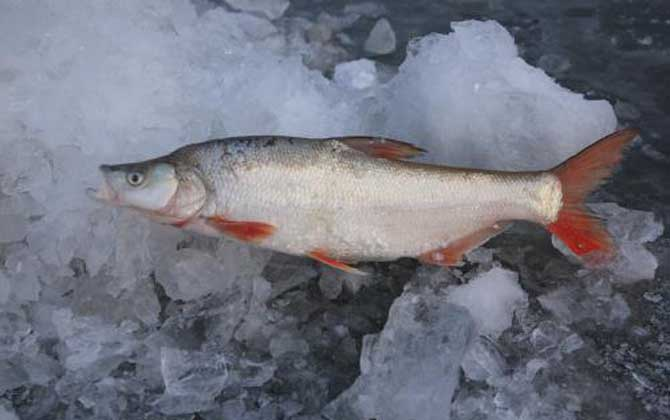
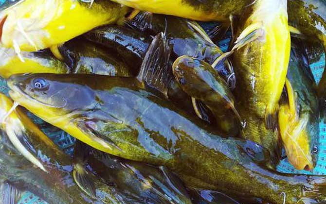

钓鱼技巧（一）：认识鱼类
鲫鱼

鲫鱼（学名：Carassius auratus）是一种淡水鱼，属于鲤形目、鲤科。它通常体型较小，身体呈侧扁形，背部呈青色或灰色，腹部则是银白色。鲫鱼广泛分布在中国及其他亚洲国家，是中国传统的食用鱼之一。
鲫鱼的特点
- 体型：通常体长在20-30厘米之间，但也有更大的个体。
- 外形：身体较为扁平，背部略呈青色或灰色，腹部为银白色，鳞片较为细密。
- 栖息环境：喜欢生活在水质较清的湖泊、池塘、河流等淡水环境中，通常喜欢栖息在温暖的水域。
鲫鱼喜欢吃什么
鲫鱼是杂食性鱼类，它们的食物来源非常广泛，主要包括：
- 水生植物：如藻类、浮萍、芦苇等。
- 昆虫及其幼虫：比如水蚤、蚯蚓、小型昆虫等。
- 底栖有机物：鲫鱼经常在池塘或河床的泥沙中觅食，吃一些沉积在底部的有机物质。
- 其他水中的小型生物：如小型甲壳类、虫卵等。
总的来说，鲫鱼适应力强，能够在不同的水域环境中生存，食物种类也很广泛，因此它们可以在自然环境中找到丰富的食物来源。
鲫鱼的做法
鲫鱼是一种肉质细嫩、味道鲜美的鱼类，可以通过多种方式烹饪，做成美味的菜肴。以下是几种常见且受欢迎的鲫鱼做法：
1. 红烧鲫鱼
红烧鲫鱼是最常见的做法，味道鲜香，汤汁浓郁。
做法：
- 材料：鲫鱼1条（去内脏、鳞）、生姜、葱、蒜、酱油、料酒、糖、盐、胡椒粉、醋、清水。
- 步骤：
- 将鲫鱼处理干净，鱼身两面划几刀以便入味。
- 热锅凉油，加入切好的姜片和葱段煸炒出香味。
- 放入鲫鱼，煎至两面微黄色。
- 加入适量料酒、酱油、糖和少量醋，翻匀后加入足够的水，烧开后转小火炖煮。
- 约10-15分钟后，调入盐和胡椒粉，最后撒上一些葱花，收汁即可。
小贴士：红烧鱼时，火候和糖的掌握很重要，糖可以使鱼肉更加鲜美，酱油的用量要适中，避免过咸。
2. 清蒸鲫鱼
清蒸鲫鱼保留了鱼的原汁原味，肉质鲜嫩。
做法：
- 材料：鲫鱼1条、生姜、葱、酱油、料酒、盐。
- 步骤：
- 将鲫鱼处理干净，鱼肚中放入几片姜片，鱼身两面可以轻划几刀。
- 在鱼身上均匀涂抹一些盐和料酒，腌制10分钟。
- 将鱼放入蒸锅，蒸约8-10分钟，具体时间根据鱼的大小调整。
- 在鱼蒸好后，倒掉蒸鱼时产生的水分，淋上酱油，撒上葱花。
- 热锅凉油，爆香姜葱，最后淋在鱼身上，增添香气。
小贴士：蒸鱼时火候非常重要，过久会影响鱼肉的嫩度，最好保持清蒸的原味，不要加入过多调料。
3. 酸菜鲫鱼汤
酸菜鲫鱼汤酸爽可口，十分开胃，是一道很受欢迎的汤品。
做法：
- 材料：鲫鱼1条、酸菜200克、姜、葱、蒜、料酒、盐、胡椒粉、鸡精。
- 步骤：
- 将鲫鱼去鳞、去内脏，洗净后切段。
- 锅中加油，爆香姜蒜，加入鲫鱼段煎至两面微黄。
- 加入酸菜、适量料酒，继续翻炒片刻。
- 加入足够的水，煮沸后转小火，煮20分钟左右。
- 加盐、胡椒粉、鸡精调味，最后撒上葱花。
小贴士：酸菜要选择酸味适中的品种，过酸或过咸的酸菜会影响汤的口感，火候也要适中，炖煮时间过长会使鱼肉变老。
4. 鲫鱼豆腐汤
鲫鱼与豆腐搭配，汤鲜味美，富有营养。
做法：
- 材料：鲫鱼1条、嫩豆腐200克、姜、葱、料酒、盐、胡椒粉。
- 步骤：
- 将鲫鱼处理干净，切段，豆腐切块。
- 锅中加少许油，加入姜片和葱段爆香，然后放入鲫鱼段煎至两面微黄。
- 加入料酒，接着加入足够的清水，煮沸后转小火。
- 10分钟后加入豆腐，继续炖煮15分钟，直到豆腐吸满鱼汤的鲜美味道。
- 加盐、胡椒粉调味，最后撒上葱花。
小贴士：豆腐最好选用嫩豆腐，豆腐入锅时间不要过早，避免豆腐煮得过碎。
5. 鲫鱼煲汤
鲫鱼煲汤是一道经典的养生汤，适合全家享用。
做法：
- 材料：鲫鱼2条、枸杞、党参、红枣、生姜、料酒、盐。
- 步骤：
- 鳞去内脏的鲫鱼洗净，切段，枸杞和红枣洗净备用。
- 锅中加水，加入鲫鱼段、党参、红枣、枸杞和姜片。
- 用大火煮沸后，撇去浮沫，转小火煲1小时。
- 加盐调味，最后可以加入一些葱花和胡椒粉。
小贴士：煲汤时，可以根据个人口味适量加入枸杞和党参等中药材，具有滋补效果，能提升汤的营养价值。
草鱼

草鱼（学名：Ctenopharyngodon idella），又称“青鱼”或“青花鱼”，是一种淡水鱼，属于鲤科，是中国及其他亚洲国家常见的食用鱼类之一。草鱼是中国四大名鱼之一，肉质鲜美，肉多骨少，营养丰富，广泛应用于家庭烹饪和餐馆菜肴中。
草鱼的特点：
- 体型：草鱼体型较大，成年草鱼体长一般在40-80厘米之间，体重大约1-5公斤，有时可以长到10公斤以上。
- 外形：草鱼体形较长，背部呈青绿色或灰绿色，腹部银白色，体表光滑，背鳍略弯曲，尾鳍较大。
- 栖息环境：草鱼主要栖息在水草丰富的淡水湖泊、河流和池塘中，尤其喜欢栖息在水草丰盛的水域。
- 食性：草鱼主要以水草为食，是典型的草食性鱼类，常常食用水中的浮萍、芦苇、沉水植物等。
草鱼的习性：
草鱼是一种活跃、适应性强的鱼类，通常生活在温暖的淡水环境中。它们具有强大的生长能力和繁殖能力，能够快速成长，适合大规模养殖。
草鱼的营养价值：
草鱼含有丰富的优质蛋白质、脂肪、矿物质和维生素，尤其是低脂肪、高蛋白，因此被认为是一种非常健康的食物，适合各个年龄段的人食用。草鱼的肉质细腻，口感清淡鲜美，且含有丰富的Omega-3脂肪酸，对心血管健康有益。
鲤鱼

鲤鱼（学名：Cyprinus carpio）是一种常见的淡水鱼类，属于鲤科，是世界上养殖最广泛的鱼类之一，也是中国传统的食用鱼之一。鲤鱼原产于亚洲的温带地区，尤其是中国和中亚地区，但现在已经广泛分布于世界各地。
鲤鱼的特点：
- 体型：鲤鱼的体型较大，成年鲤鱼通常体长可达50-80厘米，部分个体可以超过1米，体重大约在1-5公斤之间，也有些大型个体可达10公斤以上。
- 外形：鲤鱼体形较为长形，背部呈青绿色或灰色，腹部为银白色，鳞片较大，背鳍呈弯曲状，尾鳍发达。鲤鱼的嘴部有两对触须，主要用于觅食。
- 栖息环境：鲤鱼适应力非常强，能够生活在各类淡水环境中，常见于湖泊、河流、池塘等地，尤其喜欢水质清澈、富含水草的水域。
鲤鱼的习性：
鲤鱼是底栖鱼类，主要在水底觅食。它们的食物来源包括水中的植物、藻类、浮游生物、昆虫等。鲤鱼也具有较强的适应能力，能够在较为恶劣的环境中生存，耐低氧环境，因此在一些水质较差的水域中也能生长繁殖。
鲤鱼的营养价值：
鲤鱼是一种非常有营养的食物，富含蛋白质、脂肪、矿物质（如钙、磷、铁等）以及多种维生素。它的肉质鲜嫩、低脂肪，高蛋白，是健康饮食的一部分。鲤鱼汤被认为对身体有滋补作用，尤其适合孕妇、产妇及虚弱体质的人群。
鲤鱼的常见做法：
鲤鱼作为食材，有着丰富的烹饪方式，常见的做法有：
- 红烧鲤鱼：将鲤鱼处理好后，炖煮在浓郁的酱油、糖、葱姜蒜的调味汁中，味道香浓。
- 清蒸鲤鱼：保持鱼的原味，搭配少许的酱油、姜葱，清淡又美味。
- 鲤鱼汤：常见于滋补汤品，如鲤鱼豆腐汤、鲤鱼与药材（如枸杞、当归等）炖制的汤。
- 酸菜鲤鱼：鲤鱼与酸菜搭配，酸爽开胃，特别适合喜欢酸味的食客。
- 椒盐鲤鱼：将鲤鱼炸至外脆内嫩，再撒上椒盐，口感丰富。
小贴士：
鲤鱼在烹饪时常有一些腥味，去腥的小技巧包括：使用姜、葱、料酒等调料；在炖煮时，可以加入一些香料如八角、香叶等增加风味；对于鲤鱼汤，搭配一些中草药或酸菜等，可以使味道更加鲜美。
青鱼
青鱼（学名：Ctenopharyngodon idella），又叫青头鱼、青鳞鱼，是淡水鱼类的一种，属于鲤科，与草鱼、鲤鱼等同属于鲤科的成员。青鱼在中国各大河流、湖泊和池塘中广泛分布，是中国传统的食用鱼之一。它们体型较大，生长较快，常见于水产养殖业。
青鱼的特点：
- 体型与外形：青鱼体型较大，身体修长，体长可达50-70厘米，甚至有部分个体可超过1米，体重通常在2-5公斤之间，个别个体可达10公斤以上。青鱼的背部呈青色或灰绿色，腹部为银白色，外形呈梭形。鱼鳞较大，颜色鲜亮，给人一种清新的感觉。
- 栖息环境：青鱼适应力强，常栖息在水草丰富、清澈的淡水水域，如湖泊、河流和水库等。它们喜欢生活在水流缓慢的地方，特别是水深较大的区域。青鱼对水质要求较高，因此它们通常出现在水质清新的地方。
- 食性：青鱼是草食性鱼类，主要以水草、浮游植物、藻类和其他水生植物为食。青鱼的嘴巴宽大，适合食用大量的水草和植物性食物。它们也能摄取水中的一些小型浮游生物，但植物性食物是其主要的食物来源。
青鱼的营养价值：
青鱼肉质细腻，含有丰富的优质蛋白质和不饱和脂肪酸。其肉中含有较多的Omega-3脂肪酸，具有良好的营养价值，适合做为家庭食材。青鱼富含矿物质，如钙、磷、铁等，对人体有较好的滋补作用。青鱼还被认为具有较低的脂肪含量，是健康饮食的一部分。
黑鱼

黑鱼（学名：Channa argus），又叫乌鳢，是一种淡水鱼类，属于鳢科。黑鱼是一种食肉性鱼类，体型较大，广泛分布于中国以及东南亚地区，尤其在长江流域和其他江河湖泊中较为常见。由于其肉质鲜美，黑鱼在中国及一些其他亚洲国家非常受欢迎，常用于家庭和餐馆的烹饪中。
黑鱼的特点：
- 体型：黑鱼体型较大，通常体长可达40-60厘米，个别个体可超过1米，体重大约2-5公斤。
- 外形：黑鱼身体长而侧扁，背部呈深灰色或黑色，腹部较浅，呈灰白色。它的背鳍较长，尾鳍较宽。其体型和颜色使其得名“黑鱼”或“乌鳢”。
- 习性：黑鱼属于食肉性鱼类，喜欢栖息在水草丛生、底部有较多藏匿处的淡水水域。它们非常擅长游泳，且有较强的捕食能力，主要捕食小型鱼类、昆虫、甲壳类等。
黑鱼的栖息环境：
黑鱼适应力强，能够在不同的环境中生存，尤其是在清澈、富有水草的湖泊、池塘和缓流的河流中。它们喜爱栖息在温暖的水域，尤其是温度较高的季节，它们的活动范围也会更广。
黑鱼的营养价值：
黑鱼肉质紧实，脂肪含量较低，富含蛋白质、矿物质（如磷、钙等）和维生素。黑鱼的肉质白嫩且口感独特，因其富含氨基酸和胶原蛋白，被认为是滋补养生的食材。
黑鱼的常见做法：
黑鱼有着丰富的烹饪方式，常见的做法包括：
- 红烧黑鱼：将黑鱼煎至两面微黄后，加入酱油、料酒、糖、葱姜等调料，炖煮至入味，味道浓郁。
- 清蒸黑鱼：保留鱼的原汁原味，蒸熟后加入葱姜和酱油，简单清淡，非常适合喜欢清爽口味的人。
- 酸菜黑鱼：酸菜的酸味与黑鱼的鲜美相结合，口感丰富且开胃。
- 黑鱼汤：黑鱼肉质鲜嫩，可以与豆腐、枸杞、香菇等食材一起炖汤，汤味清鲜且营养丰富。
- 剁椒黑鱼：黑鱼与剁椒相结合，味道鲜香且略带辣味，特别适合喜欢辣味的人。
翘嘴红鲌

翘嘴红鲌（学名：Megalobrama terminalis），又称翘嘴鲌、红鲌，是一种淡水鱼类，属于鲌科。它们广泛分布在中国、东南亚地区的河流、湖泊等淡水水域。翘嘴红鲌因其特有的嘴形和鲜艳的体色而得名，是一种非常受欢迎的食用鱼，且因其较高的经济价值，也常见于养殖业中。
翘嘴红鲌的特点：
- 体型与外形：翘嘴红鲌体型修长，体长可达30-60厘米，个别可超过1米。其最显著的特征是嘴巴微微上翘，像是“翘嘴”，因此得名“翘嘴红鲌”。其体表通常为银灰色，腹部较浅，有时背部颜色较深，尤其在一些成熟个体中，背部和鱼鳍会呈现一些红色的斑纹或色泽。
- 嘴巴形态：翘嘴红鲌的嘴巴上翘，呈“V”字形，适合在水面或水底捕食小型的浮游生物和水中的昆虫。
- 栖息环境：翘嘴红鲌一般栖息在温暖、清澈的淡水水域中，喜欢栖息在水流较缓慢的地方，如河流的支流、湖泊、池塘等。它们对水质要求较高，因此通常生活在较为干净的水域。
翘嘴红鲌的食性：
翘嘴红鲌是杂食性鱼类，食物来源广泛，主要以小型鱼类、浮游生物、昆虫、藻类等为食。它们也会捕食一些在水面活动的小昆虫、甲壳类等。
翘嘴红鲌的营养价值：
翘嘴红鲌的肉质细嫩，富含蛋白质、脂肪及矿物质，尤其是含有一定量的Omega-3脂肪酸，对人体健康有益。其肉质味道鲜美，常被用于制作清蒸、红烧、炖汤等菜肴。
翘嘴红鲌的烹饪方式：
翘嘴红鲌因其肉质鲜美，适合多种烹饪方式。常见的做法有：
- 清蒸翘嘴红鲌：这种做法能够最大限度地保留鱼肉的鲜美原味，搭配姜葱、酱油等简单调料，味道清淡且鲜美。
- 红烧翘嘴红鲌：将翘嘴红鲌用酱油、糖、葱姜等调味料炖煮，汤汁浓郁，味道丰富。
- 翘嘴红鲌炖汤：常用翘嘴红鲌炖汤，搭配豆腐、
鲢鱼

鲢鱼（学名：Hypophthalmichthys molitrix），又叫白鲢，是一种淡水鱼，属于鲤科，是中国和东南亚地区常见的食用鱼之一。鲢鱼原产于中国，广泛分布于中国各大江河湖泊，尤其在长江、黄河流域较为常见。它是一种典型的滤食性鱼类，以水中的浮游生物为主要食物。鲢鱼体型较大，生长迅速，适应力强，常用于水产养殖。
鲢鱼的特点：
- 体型与外形：鲢鱼体型修长，通常成年鲢鱼体长可达40-60厘米，体重大约1-5公斤。鲢鱼的体形较为扁平，背部呈青灰色，腹部则是银白色。鲢鱼的嘴较大，头部较大，眼睛大而突出，这也是其名字中的“眼”字来源之一。
- 栖息环境：鲢鱼喜欢生活在流动水较快的淡水河流、湖泊、池塘等水域，常常栖息在水体中层，尤其在水流较缓慢的地方。鲢鱼是典型的滤食性鱼类，通常在水面或水体中层，靠滤食浮游植物、浮游动物等小型生物为生。
- 食性：鲢鱼是滤食性鱼类，主要通过嘴巴过滤水中的浮游生物（如浮游植物、浮游动物等）来摄取食物。它们的食物包括水中的藻类、浮游生物、植物碎片等。
鲢鱼的营养价值：
鲢鱼肉质鲜嫩，富含高质量的蛋白质、脂肪和矿物质，特别是含有丰富的不饱和脂肪酸（如Omega-3脂肪酸）。鲢鱼的肉质较为细腻，味道清淡，适合多种烹饪方式，且被认为是一种低脂肪、高蛋白的健康食材。
黄颡鱼

黄颡鱼（学名：Pelteobagrus fulvidraco），又名黄骨鱼、黄辣丁，是一种常见的淡水鱼类，属于鲿科（Bagridae）。黄颡鱼又叫黄鳝、黄腥鱼，广泛分布在中国、越南等东亚地区的江河、湖泊及水库中，是一种经济重要的食用鱼。因其肉质鲜嫩、味道鲜美，深受消费者喜爱。
黄颡鱼的特点：
体型与外形：黄颡鱼体型修长，头部较大，嘴巴宽大，形态特征明显。体色通常为黄绿色至棕色，背部较暗，腹部较浅，具有较大的鳃孔和明显的鳞片。成年黄颡鱼体长可达30-50厘米，个别个体可以长至60厘米以上，体重大约在2-4公斤左右。
栖息环境：黄颡鱼喜爱栖息在温暖、流速较缓的水域，如河流、湖泊、池塘和水库等。它们通常栖息在水底，特别偏爱泥沙底质的区域，因此常见于水底植物较多的地方。黄颡鱼对水质要求较高，适应性强，能够在一定的水污染条件下生存。
食性：黄颡鱼是杂食性鱼类，食物包括小型鱼类、昆虫、甲壳类、水生植物、藻类等。由于它们喜欢在水底活动，黄颡鱼通常以底栖食物为主。
罗非鱼

罗非鱼（学名：Oreochromis niloticus），又叫尼罗河罗非鱼、非洲鲫鱼、非洲鲤，是一种原产于非洲和中东地区的淡水鱼类。它属于慈鲷科，是全球广泛养殖的经济型鱼类之一。由于其耐高温、适应力强、生长迅速，罗非鱼在全球尤其是在热带和亚热带地区的水产养殖业中具有重要地位。
罗非鱼的特点：
- 体型与外形：罗非鱼体型较大，成年个体通常长约30-50厘米，体重大约为1-3公斤，最大个体可达5公斤以上。鱼体呈梭形，头部较小，嘴部突出。颜色一般为银灰色，腹部较为浅色，背部呈灰绿色或蓝色。
- 栖息环境：罗非鱼主要栖息在水流缓慢、温暖且富有植物的淡水水域中，如湖泊、池塘、河流、以及水库等。它们喜欢栖息在水温较高（约25°C-30°C）的环境中。
- 食性：罗非鱼是杂食性鱼类，主要食物包括藻类、浮游生物、水草、植物残渣、甚至小型昆虫和有机碎屑。它们会在水面或底部觅食，并且能在水质不太清澈的环境中生存，这使得罗非鱼成为水产养殖中的重要品种。